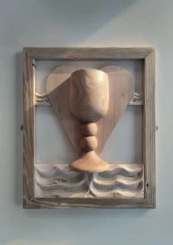

The Crafty Guillemot

Mae Lillemor Latham - The Crafty Guillemot, yn creu casgliadau bach o serameg crochenwaith wedi’i daflud ar olwyn crochenydd
Mae’r gwaith gwydredd yn tynnu ysbrydoliaeth gan dirweddau arfordirol a mynyddig Gogledd Cymru.
Lillemor Latham, working under the name The Crafty Guillemot, creates small batches of wheel-thrown stoneware ceramics.
The glaze work draws on the coastal and mountainous landscapes in North Wales.
07902109431
TheCraftyGuillemot@gmail.com
www.thecraftyguillemot.com
TYN-Y-CAEAU, CAIM, PENMON, BEAUMARIS, LL58 8SP
O Langoed - ewch dros y bont, yn syth i fyny’r allt. Cymwch y troiad ar y chwith wrth y cyffordd ar y top. Cymwch y troiad cyntaf i lawr yr allt. Dilynwch y ffordd pengaead heibio arwydd Caim. Mae’r stiwdio ar y troad dwbl.
From Llangoed - over the bridge, straight up the hill. Go left at the junction at the top. First right down the hill. Follow dead-end road past the Caim sign, you will find the studio on the S-bend